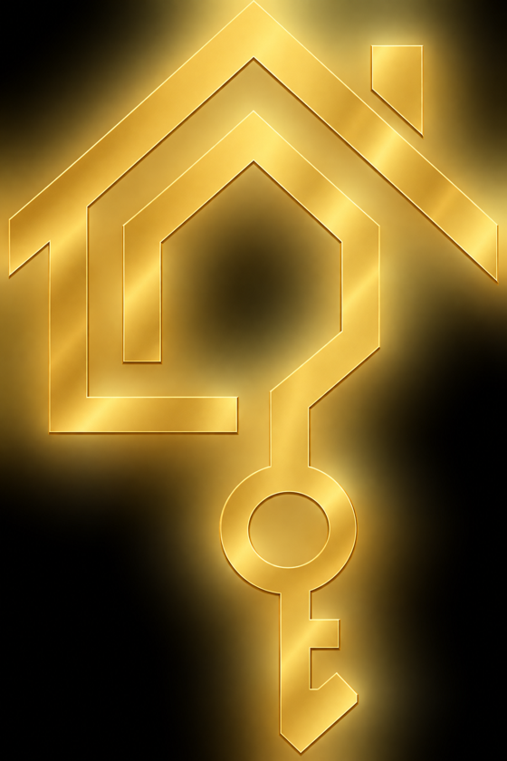
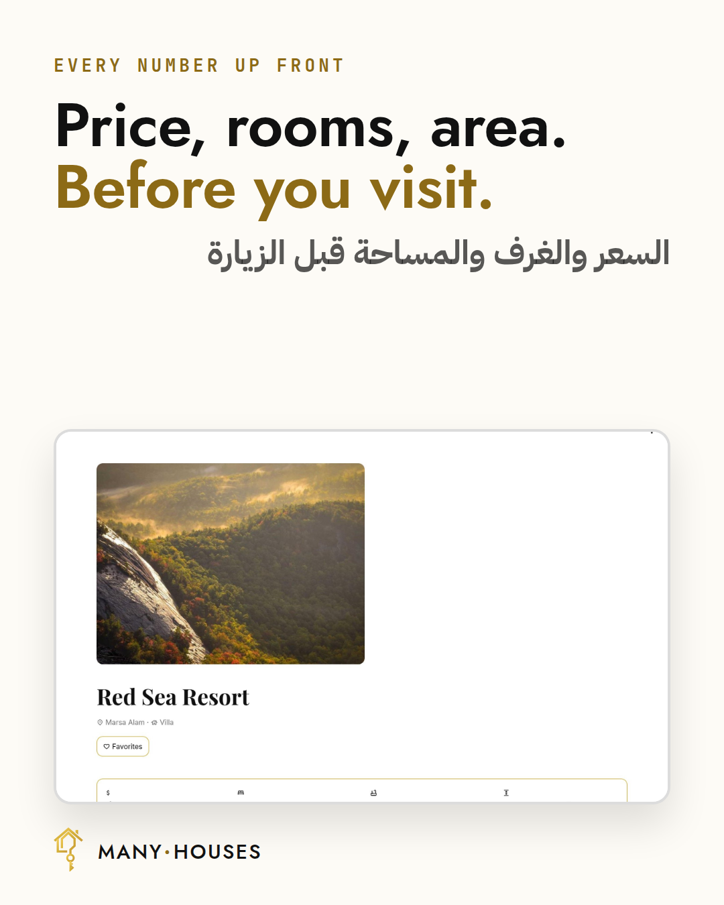
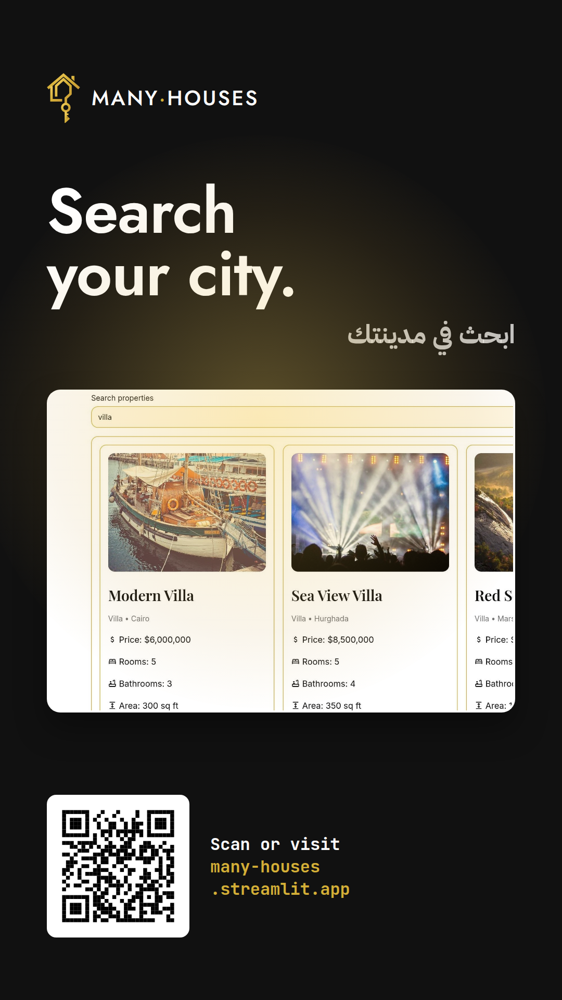
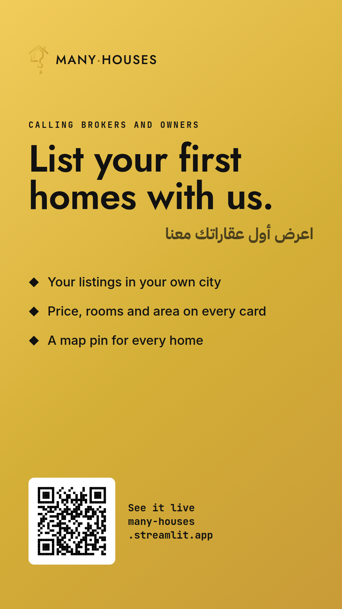
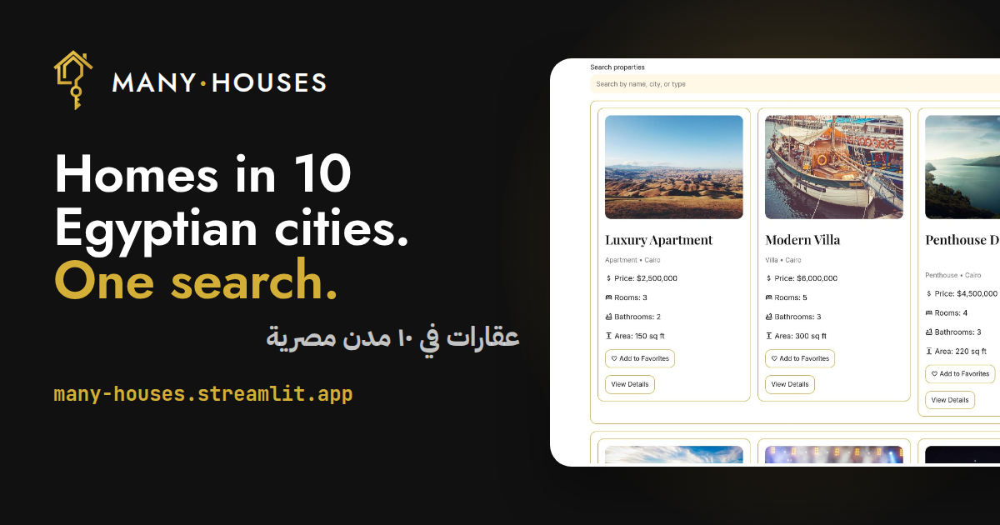

many·houses
The markالشعار

The original logo (images/many_houses_logo.jpeg). Use it on screens.

The vector mark (assets/mark.svg). Use it for print, because it stays sharp at any size.
A house outline whose wall turns into a key: finding a home and getting its key.
Why the nameسر الاسم
2–3 sentences: why "manyhouses"? Options: A "Many cities, many homes, one place to search." · B the real story of how the team chose itDoافعل
- Show real screenshots of the app.
- Call it a working prototype.
- Give a source for every market number.
- Put the gold mark on black or on cream.
Don'tلا تفعل
- Say "verified" until partners really check listings.
- Use made-up testimonials or reviews.
- Advertise $ prices. Prices move to EGP first.
- Stretch, recolour or outline the mark.
Coloursالألوان
#D4AF37Primary. App buttons, borders, links (config.toml).#111111Text and the app sidebar. The logo's black.#FFF8E7Input boxes and soft panels (config.toml).#F2CC5BThe logo's bright edge. Glows and gradients.#C99B38The logo's shaded gold. Gradients only.#8C6A16Gold for small text on light pages, where it stays readable.Typeالخطوط
Geometric capitals like the MANY HOUSES banner (images/manyhouses_baner.png). Headlines and the wordmark.
The app's own body font (config.toml).
Every heading gets an Arabic subtitle. Labels use JetBrains Mono.
The app's headings use Playfair Display (config.toml). Print and social use Jost, to match the banner.
Voiceنبرة الكلام
Write short sentences, and lead with what the person gets: "Price, rooms, area. Before you visit." Use numbers instead of adjectives.
Social templatesقوالب التواصل الاجتماعي






Instagram feed 1080×1350 · Stories 1080×1920 · Facebook link 1200×630. Source: docs/social/social.html.